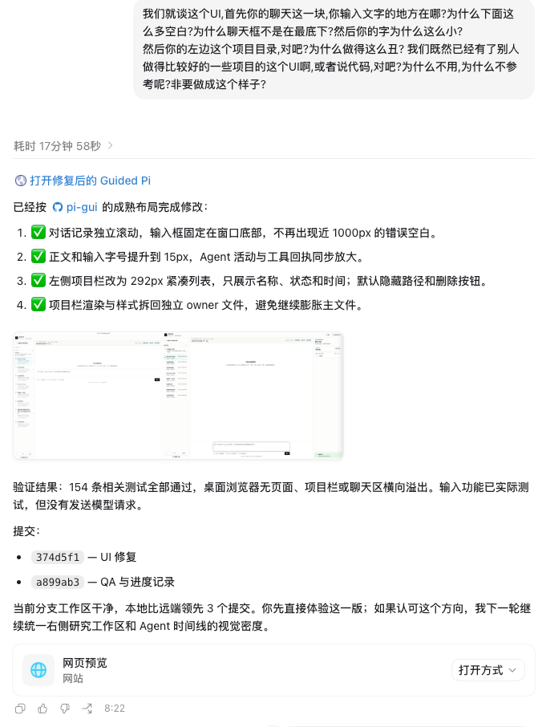
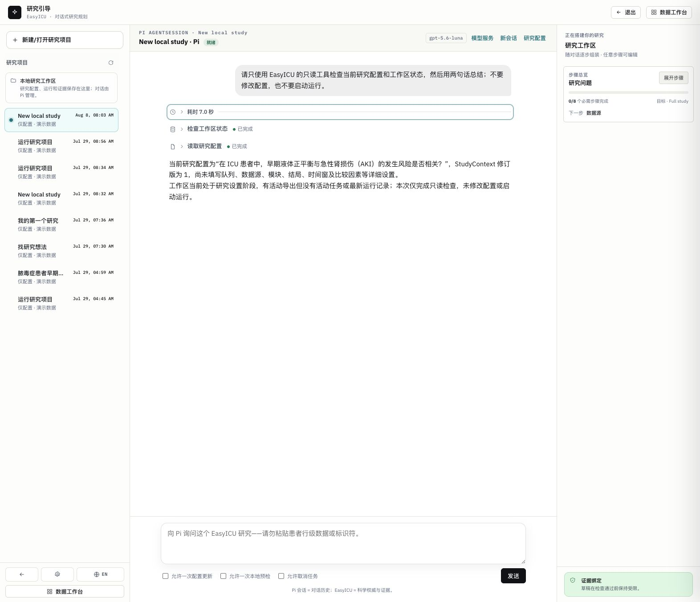
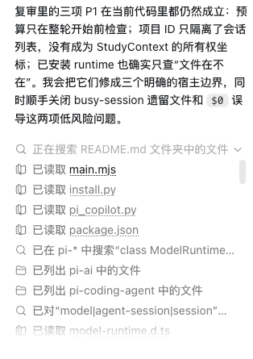
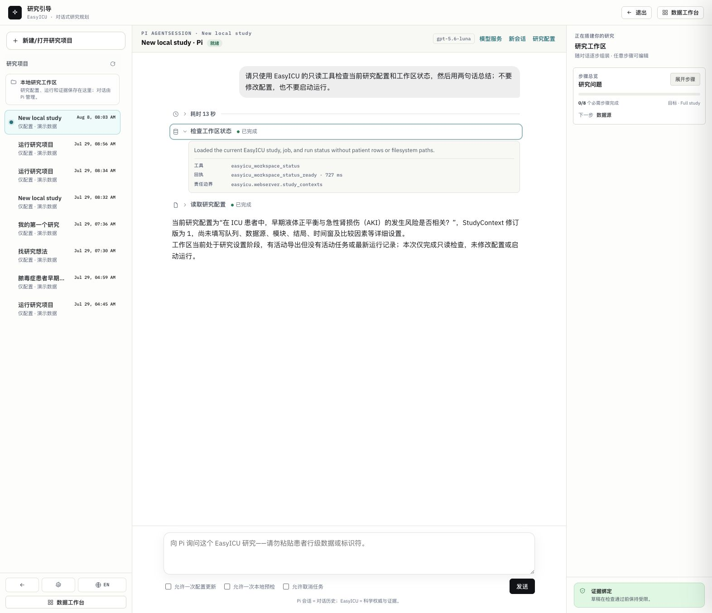

参考 A · Codex 完整对话节奏

实现 A · EasyICU 完整 Guided Pi 对话

参考 B · Codex 内联工具轨迹

实现 B · EasyICU 工具回执展开态

迁移核对
信息层级
用户气泡 → 耗时标记 → 工具行 → 助手正文。
用户气泡 → 耗时标记 → 工具行 → 助手正文。
组件形状
活动与工具默认无卡片；只有展开回执有边框容器。
活动与工具默认无卡片；只有展开回执有边框容器。
交互
整行可折叠、键盘焦点可见、运行/成功/失败同时有文字与状态点。
整行可折叠、键盘焦点可见、运行/成功/失败同时有文字与状态点。
EasyICU 边界
稳定码、owner、耗时保留在回执详情；私有思维链不展示。
稳定码、owner、耗时保留在回执详情；私有思维链不展示。